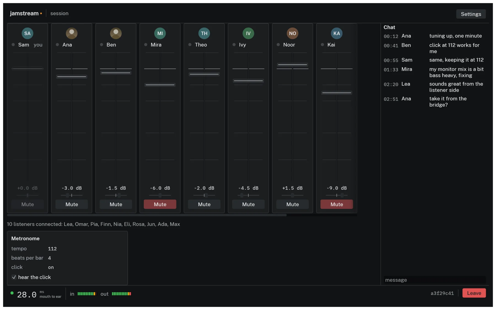
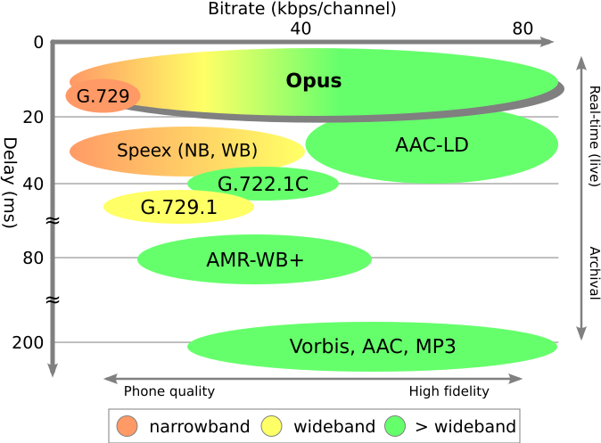
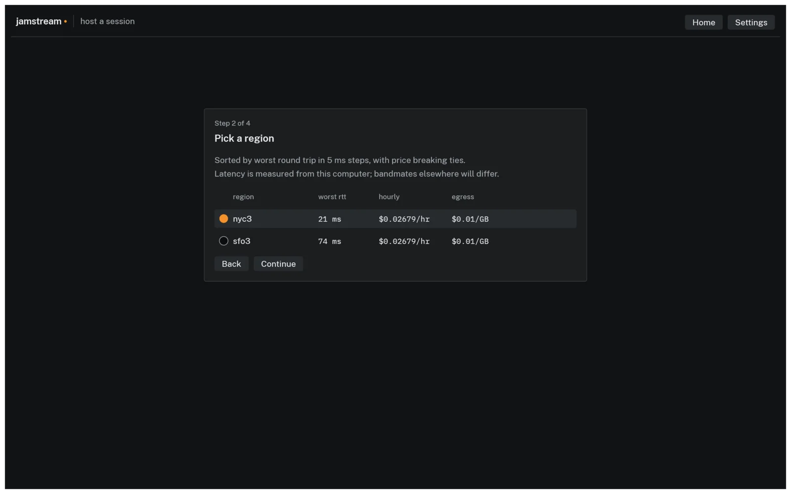
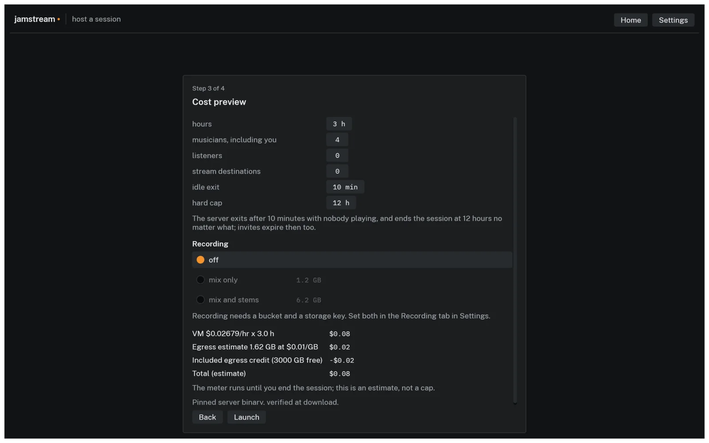
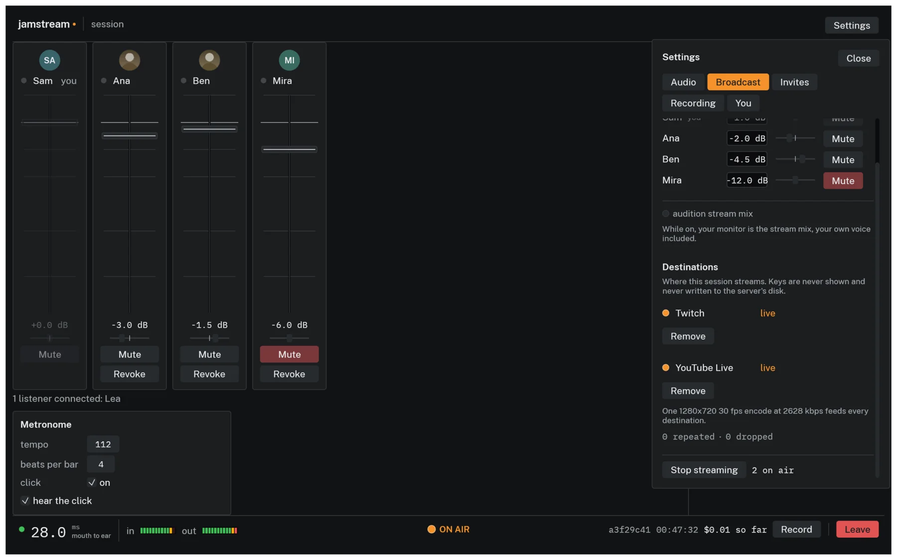
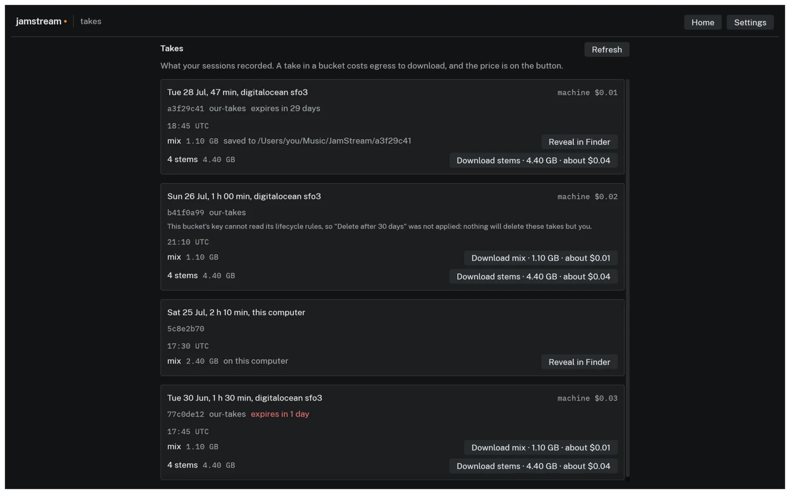

Sound travels about a foot per millisecond. Two musicians ten feet apart on a stage are already playing ten milliseconds in each other's past, and an orchestra spans several times that. Ensembles absorb this up to a point. Somewhere around 30 ms the delay stops being room acoustics and starts being lag, and by 70 ms you're not playing together anymore, you're taking turns. A video call runs 150 to 300 ms mouth to ear and nobody minds, because conversation is turn-taking. Music is not. That gap is the whole engineering problem.
JamStream is a desktop app for jamming over the internet at latencies you can play on. One musician hosts. The app launches a session server on their own computer or in their own cloud account, mints one invite link per seat, and everyone else pastes theirs. Up to ten musicians play, up to twenty listeners tune in, the session can stream to Twitch and YouTube and record takes into the host's own bucket, and when the music stops the server deletes itself. There are no accounts and none of my servers in the middle.
Where 30 ms goes
I set the target at under 30 ms mouth to ear. The sound card takes a 2.5, 5, or 10 ms device buffer in each direction, and on Windows WASAPI exclusive mode buys back the 20 to 30 ms that shared mode costs. Sample rate conversion costs about 3 ms per direction when a device won't run at 48 kHz. The network is paid twice, your uplink and everyone's downlink. The receive-side jitter buffer holds 2.5 to 60 ms depending on the link, and the client holds a small playout cushion ahead of the card. I sum all of it, from sound entering the interface to the last buffer handed to the sound card, which is as far as a measurement from inside the app can see. Measured medians with real Opus and real encryption over a simulated network are 14.7 ms at a 1 ms round trip to the server, 24.3 ms at a same-region 12 ms round trip, and 69.8 ms coast to coast over 45 ms of DSL. Those numbers are CI gates, which I'll get to.
The server mixes
The session server runs a mix tick every 2.5 ms, which is 120 samples at 48 kHz. Each tick it decodes every musician's uplink, builds one personal stereo mix per musician with that musician left out, applies that member's fader and constant-power pan, and encodes the result back at 192 kbps. You're left out of your own mix because you monitor yourself locally through your hardware, and at low latency a mix that includes your own signal late is unplayable. Listeners get a broadcast mix accumulated over eight ticks into 20 ms frames, run through a brickwall limiter with 1 ms of lookahead and a -1 dBFS ceiling, encoded once at 128 kbps, and sealed separately for each listener. Encoding it per listener measured at 20 encodes of 190 µs each inside a 2,500 µs tick, which doesn't fit. Encoding once brings the worst tick at full capacity to about a quarter of the deadline.
The self-exclusion has an escape hatch because the right answer inverts with distance. Past about 30 ms, playing against your own direct sound splits you across two timelines, your hands on one and the band on another. So the Audio tab offers Hear yourself through the server, where your own sound joins the mix delayed like everyone else's. It's off by default, needs headphones, and only appears when the latency says it would help. The metronome is mixed sample-accurately on the server and kept out of the listener mix.
The wire
The protocol is my own, over a single UDP socket, not QUIC or WebRTC. The handshake is Noise IK with X25519, ChaCha20-Poly1305, and BLAKE2s. IK matters because your invite carries the server's static public key, so the server is authenticated on the very first packet with no certificates and no trust-on-first-use. Your identity is an Ed25519-signed seat token minted on the host's machine before the server even exists. An invite is about 220 characters, admits one person, and can be revoked mid-session.
Media frames get a hand-packed 14-byte header because I wanted to see every byte on the hot path. When loss crosses 1%, each packet starts carrying the previous frame's payload too, so any single loss is recovered from its successor. Redundancy turns off only after ten consecutive loss reports below 0.2%, so a flapping link doesn't toggle doubled bandwidth every second.

{kind=link}
Opus has a quirk that shaped this. Frames under 10 ms force the CELT code path, and Opus's in-band forward error correction only exists in the SILK path. So the 2.5 ms musician frames rely entirely on my piggyback scheme, while the 10 and 20 ms listener frames get in-band FEC as well. Chat, rosters, and stream control ride a small reliable channel over the same socket, and replay protection is WireGuard's sliding-window scheme.
The handshake path is also where the denial-of-service math lives, because reading a handshake init costs an X25519 operation on the same task that owes everyone 2.5 ms of audio every 2.5 ms. Above 24 inits per second the server switches to WireGuard-style stateless cookies. I put that below the 32-per-second Diffie-Hellman budget so cookies engage before honest joins start being dropped. A version reject is 21 bytes, so any init shorter than 48 bytes gets silence, because answering a 3-byte datagram with 21 bytes would make the server an amplifier.
The jitter buffer's blind spot
The jitter buffer is mostly textbook. RFC 3550 interarrival jitter smoothed with a 1/16 EWMA, a target depth of three times that plus one, clamped between 1 and 24 frames. It grows by holding a tick and shrinks by dropping a frame after 16 consecutive over-target ticks. It only shrinks above target plus one, because the piggybacked redundancy is only usable when a lost packet's successor has already arrived, and a buffer that shrank to exactly its target would silently disable its own loss protection.
The interesting part is a failure mode between the ordinary recovery paths. If a packet arrives one frame behind the playout position and that pull was concealed, playout steps back a frame. If arrivals jump 512 frames, that reads as a stream restart and the buffer resets. Between those two lies a hole. A persistent offset of 2 to 511 frames means every packet is slightly late, every pull conceals, and both escape hatches are out of reach forever. The signature is a concealed pull with nothing playable on a tick that also dropped a late packet, and if it persists for 60 ticks the buffer abandons its playout position and re-anchors. I derived the 60 from both ends. The largest transient that heals itself resolves within about 32 ticks, so 60 gives 2x margin against false positives, and 60 ticks of detection plus a worst-case refill is about 210 ms, inside the 250 ms audio-continuity gate the tests enforce. A negative control runs 5,000 ticks of 2% loss with deep reordering and must never trip it.
Nobody's clock is right
Two sound cards both claiming 48 kHz differ by up to a couple hundred parts per million, and 200 ppm is 17 spurious frames per minute that have to go somewhere. Each direction runs a resampler whose ratio is steered a few ppm at a time by a PI controller watching buffer depth, with ±500 ppm of authority and a slew limit of 1 ppm per frame. The setpoint is the subtle bit. It tracks a slow moving average of the depth itself, floored at target plus one, so the controller nulls the rate mismatch and leaves the jitter buffer's own adaptive target alone. A property test asserts zero heap allocations across 5,000 steering cycles, because this runs next to the audio callback.
Before any of that, the device has to get to 48 kHz at all, and how much you can trust a device is per-OS. Run natively at 48 kHz if possible. Set the device's clock where the OS permits it, which is CoreAudio, and tell the user since every other app sees it. Let the OS convert, on WASAPI and PipeWire. Or convert at the boundary and count the roughly 3.2 ms into the latency figure. ALSA sets the nearest rate the hardware supports and never reads it back, so a 44.1 kHz card asked for 48 comes back looking successful and plays the whole session sharp and 8.8% fast. ALSA and any unrecognized host are assumed to be lying and get the converter. The one flat refusal is a Bluetooth headset microphone in hands-free mode. That's an 8 or 16 kHz telephony endpoint and no resampler un-telephones it.
Renting a server for the evening

Hosting in the cloud starts with a probe. The app sends UDP round trips to every candidate region and ranks them by the worst member's RTT, because the band is only as tight as its most delayed member. RTTs are bucketed into 5 ms steps with price breaking ties inside a bucket, so a 2 ms edge never beats a cheaper region. Anyone whose best RTT to anywhere exceeds 150 ms is on satellite or worse and is excluded, so one bandmate on a boat can't veto the region for everyone else. Providers are DigitalOcean, AWS, and GCP, or your own computer, which is the default and costs nothing.
A rented server that outlives the jam is a subscription you didn't sign up for, so teardown is a dead man's switch that lives in the guest, never on your laptop. While musicians are connected, the server touches an activity file once a second. A systemd timer compares that file's age against the idle window (default 10 minutes) and the session's hard cap (default 12 hours). The guard measures both in /proc/uptime seconds and never subtracts wall-clock timestamps, because a cloud VM routinely boots with a wrong hardware clock and takes a large NTP step a minute later. A wall-clock idle window would read that step as ten minutes of silence and destroy a server with musicians playing on it. An in-flight recording upload defers destruction, but never past 600 seconds. A VM that never dies costs more than a lost recording.
What destroy means is different on every provider. On AWS, instances launch with shutdown behaviour set to terminate, so the guard runs shutdown -h now and the box holds no credentials at all. On DigitalOcean, powered-off droplets still bill, so the droplet deletes itself through the API with a token scoped to that one droplet. On GCP, the instance carries no service account, so nothing on it can delete it. Instead the launch sets a maximum run duration with a termination action of delete, and the guard must never power the VM off, because Compute Engine clears the pending termination when an instance stops and a powered-off instance would bill its disk forever. As a backstop, every launch of the app or CLI sweeps all configured providers for tagged machines that shouldn't exist.

Three hours of a four-piece costs about $0.08. The worst case, every guardrail ignored for the full 12-hour cap, is around forty cents.
Streaming and takes

Streaming runs entirely on the session server. Frames are rendered in-process as a pure function of the roster and the frame index, encoded once by ffmpeg at 720p30, published to a MediaMTX relay on localhost, and pushed to each destination by its own ffmpeg -c copy process with its own restart backoff. I chose one process per destination over ffmpeg's tee muxer so that Twitch falling over restarts one pusher while YouTube never drops a frame.
Audio is the master clock. At 30 fps a video frame is 1,600 samples, which is 13⅓ mix ticks, so there is no whole number of ticks per frame and any implementation that picks one drifts without bound. 16 ticks per frame is exactly 25 fps wearing a 30 fps label. Instead the frame count due is a pure function of cumulative samples consumed, which produces a repeating 13, 13, 14 tick pattern that lands exactly 3 frames every 100 ms. When the renderer falls behind, catch-up frames repeat the last picture instead of being skipped, because the frame count is what keeps video pinned to audio.
Feeding ffmpeg two raw streams through pipes hides a deadlock that survives testing on one platform. ffmpeg demuxes all inputs on one thread and reads whichever is behind. A raw 720p frame is 1,382,400 bytes. A pipe holds 65,536 bytes on Linux but as little as 16,384 on macOS, so the same frame is 21 pipe-fulls on one machine and 84 on the next, and a single thread feeding both pipes eventually waits on a pipe ffmpeg isn't reading. The fix is one writer thread per pipe with bounded queues. The video queue drops frames on overflow. The audio queue never drops, because a hole in the master clock is worse than a restart, and is bounded by a stall detector instead. Stream keys never touch a command line. Each key is written to a file created 0600, unlinked before the child even returns from spawn, and read by the pusher into an environment variable, with every URL in ffmpeg's stderr redacted before it can reach a log.

Recording writes 16-bit 48 kHz FLAC, the full mix and optionally one stem per musician, streamed during the session. The FLAC header is written with the total sample count marked unknown, so multipart upload to the host's own S3, Spaces, or GCS bucket can run while the take is still being played. Retention is a real bucket lifecycle rule. Each Record-to-Stop is one take.
Testing on a fake internet
The server and client cores are sans-io. They take a timestamp and datagrams in and give datagrams and events out. The same code runs under the production server binary, the desktop app, and a deterministic simulation harness that drives a real server and up to thirty real clients, with real Opus and real Noise encryption, in one process on a hand-advanced virtual clock, through a seeded network simulator with per-link delay, jitter, loss, reordering, and duplication. Same seed gives the same bytes every run, and networked bugs that would surface once a month on stage replay in milliseconds on a laptop.
That's where the latency table comes from, and each number is a CI gate: 16 ms for same-city fibre, 30 ms regional, which is the product promise, and 72 ms for cross-country DSL. Each has a lower bound too, since a measurement below the physical floor means the measurement is broken. A hostile-wifi scenario requires redundancy to close at least 75% of loss-induced gaps per member, measured at 90 to 93%. It's per member because a summed figure lets one healthy member cover for two broken ones. The 2.5 ms tick budget is gated at p99, because the deadline is per tick and a mean divides the expensive tick into the seven cheap ones. The timed gates run on their own CI runner after an experiment showed that contention barely moved the median but moved the p99 seventeen-fold. Hot paths are asserted allocation-free with a counting allocator, and the protocol has nine fuzz targets, including the Opus decoder, since it parses network bytes on a publicly reachable machine.
It's a Rust workspace of eleven crates and about 1,500 tests, at v0.5.2 and in beta. The app ships signed and notarized for macOS and as plain binaries for Windows and Linux, and the session server is a static musl build that cloud-init downloads and checksum-verifies at boot. Downloads and the full guide are at sean-reid.github.io/jamstream.